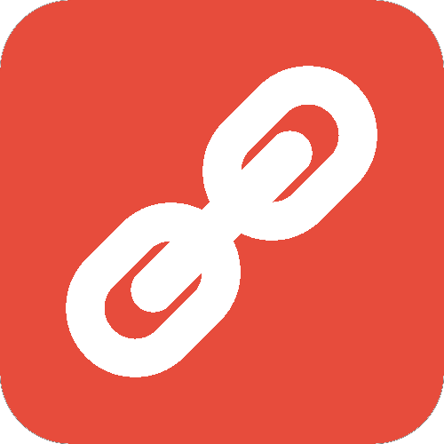

Dogecache is a mobile-first web app inspired by the concept of Geocaching. In the game of Geocaching, people experience scavenger hunts by finding objects that are planted by other players, and at the same time they plant their own objects for people to find. It's a game about finding and giving. In Dogecache, people search for dogecoin in their area while giving away dogecoin. By searching the area around them, users can pick up dogecoin within their radius but also has to drop off dogecoin where they are located. This way, dogecoin is always kept in circulation of the Dogecache app, and the game never ends. This app was a hack made at the hackathon at Bergen County Academies. It won the "Most Polished App", in addition to "Best Quality Design App" by Intel. Dogecache was also given a special invitation to debut at NYC Techday, New York City's largest tech startup exhibition (and with Dogecache, it includes high schoolers for the first time)!
CityScenes
Explore the city by bike.
CityScenes allows you to travel around New York City with CitiBike's bike sharing program and experience a scenic route on the way. It uses the Google Maps API and open NYC data of tourist locations that gives you the optimal route from point A to point B using a CitiBike and passing through the desired number of locations. This app was a hack made during the Young Rewired State (YRS) Hackathon in NYC. It won the "Best in Show" award and gave our team the opportunity to travel to the UK to participate in the YRS UK Hackathon. Skills used include HTML, CSS, JavaScript, Bootstrap, Google Maps API, and Yahoo! Weather API.

Chainge
The missing link to a more productive lifestyle.
Chainge is a task management app that helps users keep themselves motivated in the things they've always wanted to do. People usually get highly motivated to do something one day, but then the next day lose that motivation. Chainge helps encourage and instill that motivation. By adding to the daily tasks list, users try to complete their daily tasks consistently and maintain a chain of the number of days they completed their tasks. By adding on to this chainand completing their tasks without fail, users can feel rewarded in their progress by leveling up. The calendar keeps a visual archive of tasks completed on certain days and displays the chains of tasks that were completed daily. Chainge also has a reminders list that can help a user track events to come or things to complete that may not be daily. The reminders can also be sorted by category - Hobbies, Education, or Fitness. Skills used include HTML, CSS, JavaScript, PHP, MySQL, Bootstrap, and CodeIgniter.
SafeWalk
Navigate without fear.
SafeWalk is an app (in progress) that gives you walking directions throughout Manchester, UK that avoids dangerous locations. The dangerous locations are determined with the Manchester Police open data on crime locations, and a heat map displays these areas on the map provided by the Google Maps API. An algorithm for directions detours around these places above a certain danger threshold. SafeWalk also has a Report/Live Feed feature. This feature gives the user a chance to report a concern or problem he encountered and submit it. This report will update onto the website and display in real time to anyone else viewing the website at the same time. In addition, SafeWalk's responsive design gives an optimal mobile User Interface with an easy-to-access menu. This app was a hack made during the Young Rewired State (YRS) Hackathon in the UK. Skills used include HTML, CSS, JavaScript, PHP, MySQL, Bootstrap, Google Maps API, Yahoo! Weather API, Express, Embedded JS, and MongoDB.